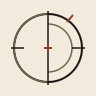

Frame
Diamond translates a goal into explicit tasks, claims, and load-bearing obligations.

BOHRARRAYBOHR / RESEARCH INSTRUMENT 01
Evidence before authority.
An evidence-governed agent and research system that combines a Hermes-derived operational runtime with specialist methods, typed receipts, process assurance, adaptive complement, and independent review.
METHOD / CONTROL MODEL
Models, tools, and agents can move the work. They cannot certify their own output. Array separates operational activity from factual warrant and release authority.
Diamond translates a goal into explicit tasks, claims, and load-bearing obligations.
Opal identifies the least-covered capability; Diamond selects the claim-native instrument.
Quartz runs models, tools, MCP services, sessions, memory, and delegated operational work.
Sapphire, Emerald, Ruby, Garnet, or Topaz returns evidence with an explicit scope.
Onyx, Amethyst, and Obsidian attack false greens, weak independence, and hidden defects.
Diamond reads the latest integrity-valid receipts and returns CLEARED, ISSUE, UNKNOWN, or UNAVAILABLE.
ROUTE PLATES / FIVE EXAMPLES
No single model or method owns every question. Array selects a bounded chain according to what must be proved, searched, built, measured, reviewed, or left unresolved.
Emerald → Ruby → Garnet → Topaz
Sapphire → Amethyst
Garnet → Onyx → Obsidian
Citrine → Diamond → Topaz
Opal → Relevant instrument
ARRAY / OPERATIONAL LAYER
Hermes-quality operational mechanisms, contained behind a Gauntlet-owned authority boundary.
Quartz is the public name for the interim runtime in gauntlet_host/. It runs the exact pinned MIT-licensed Hermes Agent source as an isolated internal worker. The parent process owns task identity, observation binding, finalization, and the release gate.
STATUS / ALPHATHE FIVE CLAIM-NATIVE INSTRUMENTS
Each instrument owns a distinct obligation class. The visual field changes from geometry to botany, morphology, engineering, and metrology while the evidence panel stays modern and explicit.
mathbot / /mindSAPPHIRE
Translate a claim into explicit objects, assumptions, a proof obligation, a negation, and a verifier that speaks the claim’s native language.
scoutbot / /spaceEMERALD
Map the evidence landscape before novelty, current-state, reuse, or attribution claims are allowed to harden.
novelbot / /realityRUBY
Invent only after the nearest established methods fail a specific, named constraint and the delta can be tested.
codebot / /powerGARNET
Move software claims through the real source boundary, real implementation, real entry point, and the defect classes that could falsify them.
benchbot / /timeTOPAZ
Make candidate and baseline compete under the comparison, exclusions, uncertainty model, and stopping rule that answer the actual decision.
AUTHORITY PATH / ONE CONTROL MODEL
Quartz can execute. Opal can advise. The instruments can generate claim-scoped receipts. Onyx and the review systems can identify defects. Only Diamond governs final release.
Task→Obligations→Runtime observations→Claim-native receipts→Assurance→Scoped release
DIRECTORY / TEN CORE CONTRACTS
Public display names changed. Technical IDs, slash commands, skill paths, runtimes, receipts, and compatibility contracts did not.
/soulFrame complex work and govern its evidence state.Multi-stage research and engineering tasks that need explicit ownership, integration, and a fail-closed release decision.
Hashes the goal, creates typed obligations, routes the minimum specialist chain, accepts only valid latest receipts, and returns a scoped verdict.
/mindProof, logic, probability, and counterexamples.Theorem checking, mathematical derivations, formal specifications, probabilistic reasoning, and exact counterexample search.
Defines objects and assumptions, states the claim and negation, selects a native verifier, attacks edge cases, and reports the verified scope.
/spaceLiterature, prior art, repositories, and standards.Literature reviews, prior-art searches, technical due diligence, current-source verification, and reusable implementation discovery.
Translates mechanisms into search terms, expands across neighboring fields, inspects primary sources and repositories, deduplicates identities, and records limits.
/realityConstruct mechanisms after a verified constraint gap.New methods, algorithms, protocols, and architectures when established approaches fail a named, evidence-backed constraint.
Requires the prior-art delta, binds the mechanism to the gap, enumerates assumptions and failures, and specifies controls, ablations, and verification.
/powerArchitecture, implementation, execution, and regression.Building, integrating, debugging, and qualifying software against its real source, environment, entry points, and defect classes.
Creates a typed verification plan, executes bounded commands without shell interpolation, records hashes and environment, and separates checked from untested behavior.
/timeBaselines, ablations, uncertainty, cost, and stop/go.Matched comparisons, experimental design, benchmark qualification, contamination handling, uncertainty analysis, and cost-aware decisions.
Freezes arms and exclusions, chooses a matched estimator, preserves null and negative results, corrects multiplicity where required, and binds results to a decision.
/gauntletFalse-green, stale-state, scope, and integrity defense.Auditing a research or engineering process when passing tests, repeated claims, inherited numbers, or stale authority may conceal a defect.
Records typed events, checks governing-state freshness and ledger integrity, distinguishes framing from cosmetic process, and raises bounded findings.
/meditateFacts, assumptions, unknowns, blockers, and next action.Consequential choices, post-failure resets, and stalled projects where premature execution would harden an unsupported direction.
Separates facts from assumptions, records unknowns and options, identifies the binding blocker, and estimates whether more computation is worth its cost.
/councilIndependent commitments, critique, and synthesis.High-stakes review where one model, one reviewer, or untracked consensus would provide weak independence.
Freezes the artifact and budget, assigns independent seats including a skeptic, commits before reveal, cross-critiques off diagonal, and preserves disagreement.
/foilFind the task capability least covered by the user.Adaptive work where assistance should complement the user’s demonstrated coverage instead of replacing judgment or repeating existing strengths.
Uses conservative evidence tiers, task facets, structured calibration, and transfer history to request the smallest useful complement while remaining advisory.
Implementation directory — executable helpers, state policy, profiles, adapters, and validation live outside the public skill contracts.
Inspect all Python implementation files ↗ADDITIONAL SYSTEMS / DECLARED STATUS
These components extend execution, attack, or research exploration. Their status is stated separately from the ten core contracts.
Provider, tool, MCP, context, session, memory, skill, retry, and delegation mechanisms behind an observation-only boundary.
gauntlet_host/Multi-seat attack, participation accounting, cross-critique, and structured break triples. It can raise an issue and can never clear a claim.
blackgemArchived mechanism-planning hardening with exact minimum successful repair over a declared finite repair universe. Not promoted into runtime authority.
postbench candidate 2Archived mathematical execution hardening for trusted-base minimality, process isolation, cleanup, and deterministic qualification.
postbench candidate 2RECEIPT TABLE / CLAIM SCOPE
The archival treatment stops here. Evidence is shown on a clean modern panel with explicit scope, source paths, and unresolved boundaries.
Design boundary: classical sculpture, botany, zoology, engraving, and instrument cues may affect perceived prestige or scientific seriousness. They do not add evidential weight to any row above.
LEGACY INDEX / NON-BREAKING MIGRATION
The public identity changed without rewriting the underlying contracts. Existing citations, commands, and receipts remain stable.
/soul/mind/space/reality/power/time/gauntlet/meditate/council/foilSOURCE / GOVERNANCE / PROVENANCE
The site is a frontispiece. The repository remains the authority for source, validation, security, governance, reproducibility, claims, and visual provenance.